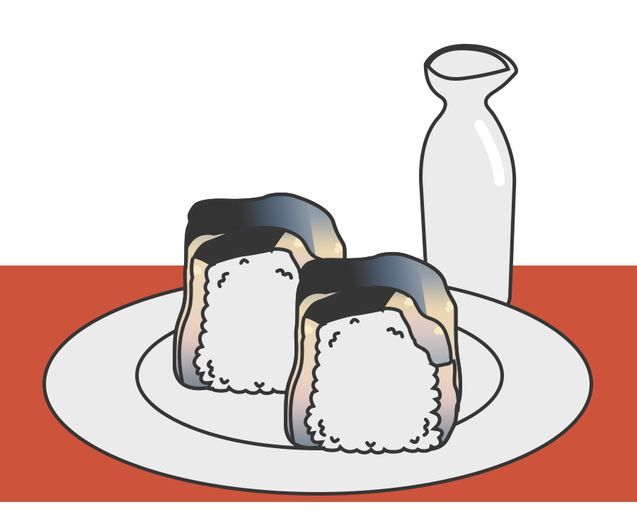
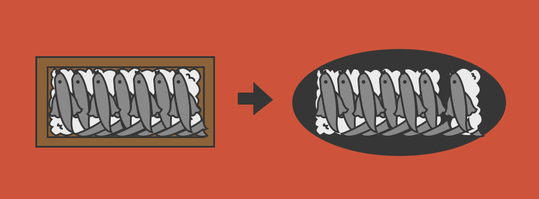
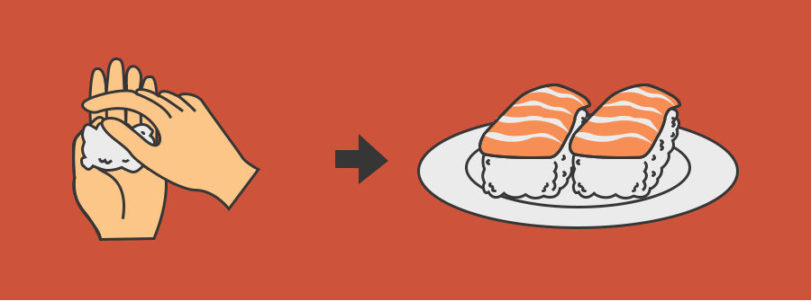
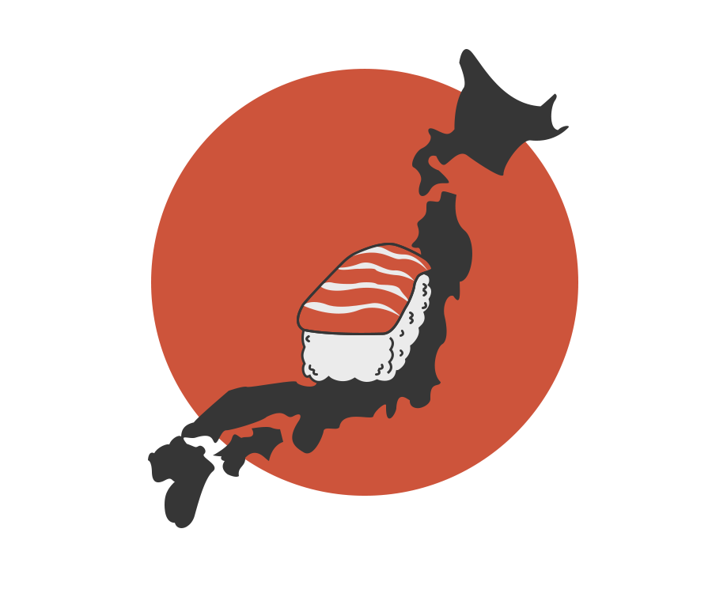
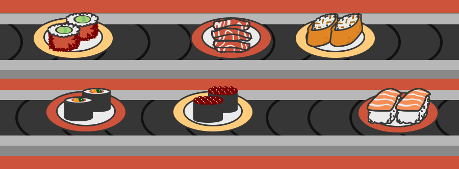

Sushi is originated from South East Asia. By the 8th century, sushi is brought to Japan. Sushi first form is Narezushi, which is a method to preserve fish for a long-time using rice. The fish is buried into a mound of cooked rice sealed inside a jar. This method fermented the fish and keep it edible for several mouth. When it is time to eat, the rice is thrown away to eat the fermented fish. It is considered to have a sour, unami or savoury flavour.
By the 1400s, the process of eating rice together with the fish become a common practice, people begin eating sooner in the fermentation process. Sushi is still a luxury food at this stage in time.
 By the 1600s, Japanese invented rice vinegar from sake (rice wine). When add to sushi it gives a sour flavour instantly without being fermented. This leads to a new version of sushi called haya-zushi (quick sushi), which make freshness in both the rice and fish become the standard of eating sushi. At this time, sushi was mostly eaten in Kyoto and Osaka. After the capital is moved from Kyoto to Edo, sushi followed.
In 1657, the Great Fire of Meireki destroyed most of the capital. During the rebuilding of Edo, many workers need something to eat. Food stalls and stands were created for fast-paced work hours and lifestyle. Hot noodle stands and any other open-flamed food were outlawed during dinner hours, because authorities did not want to deal with another potential fire disaster. Sushi don’t need any fire or flames for preparation, so it quickly became a popular food in Edo.
In the late 1700s, sushi become one of Edo’s first fast food. At this time, Sushi was prepared by rice mixed with rice vinegar spread into a box, layered with fish on top, pressed with heavy stones for a few days, then cut into pieces like a loaf of bread. This type of sushi also known as oshizushi. At the same time, Sashimi also grew in popularity.
By the 1800s, as the process of preparing sushi is not quick enough, hand-squeezed sushi (nigiri) is invented to make sushi on the spot. Hanaya Yohei found out that, instead of throwing out the rice, people could toss it with a bit of vinegar, and small silver of fish could be placed on top, making a flavourful, bit-sized treat. This make sushi be able to spread its popularity throughout Edo. Thus Edomae-zushi is born- this is the style of sushi that only make in capital and still affectedly used by sushi aficionados today. During this time, there was a burst of creativity and innovation around making sushi. There were variety of sushi style like norimaki. Another trend in sushi is aburi which is made from nigiri sushi that is partially grilled or seared. This allows for dynamic interplay of flavours and textures in sushi. Thus, sushi change from being a preserved food to a fast food.
 By the 1900s, nigiri-zushi got spread across Japan make it become a Japanese tradition. However, the Great Kanto Earthquake of 1923 and World War II, a burnt-down and devastated Tokyo forced many sushi chefs to leave the city.
After the conclusion of World War II, sushi began to become more popular in the West. Many restaurants began experimenting with the new taste combinations and sushi rolls. One of the rolls that became the most popular in America is California Roll which is an inside out “makizushi” roll. As people got used to the idea of eating sushi, restaurant started to branch out into more traditional sashimi and nigiri dishes. Kaiten-style (Sushi train) helps people access to variety of sushi placed on conveyor belts.
Today, Sushi is one of the most widely eaten food across many countries. Many chefs use this opportunity to create more unique and different sushi rolls every day.
